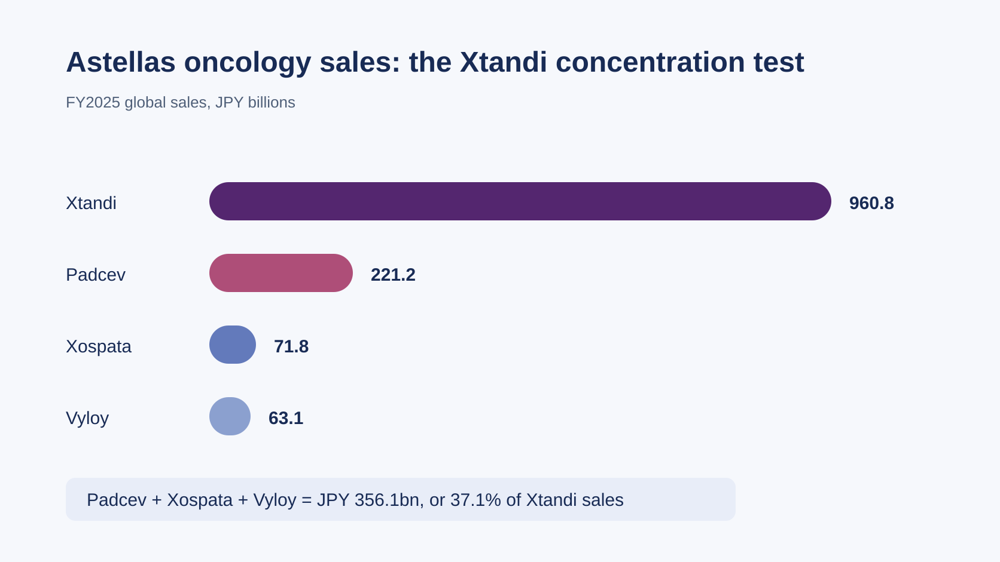
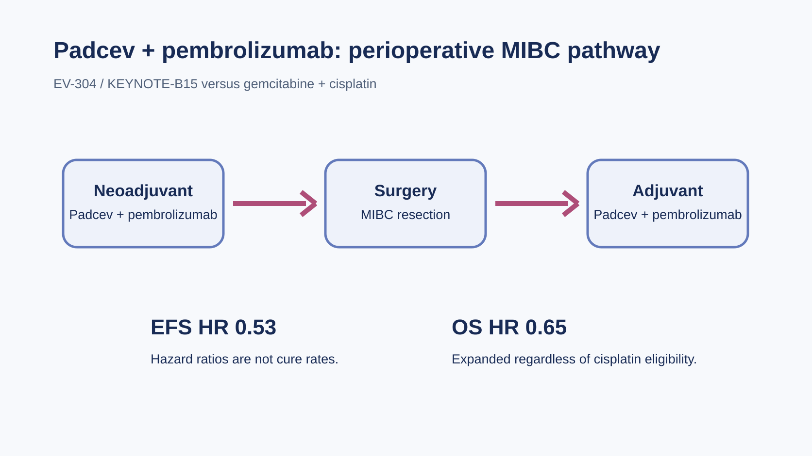
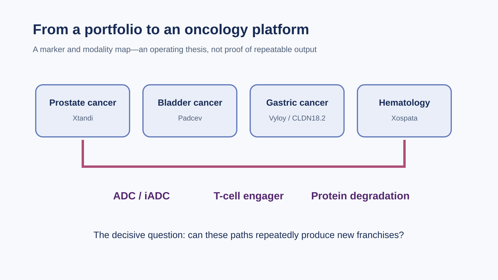
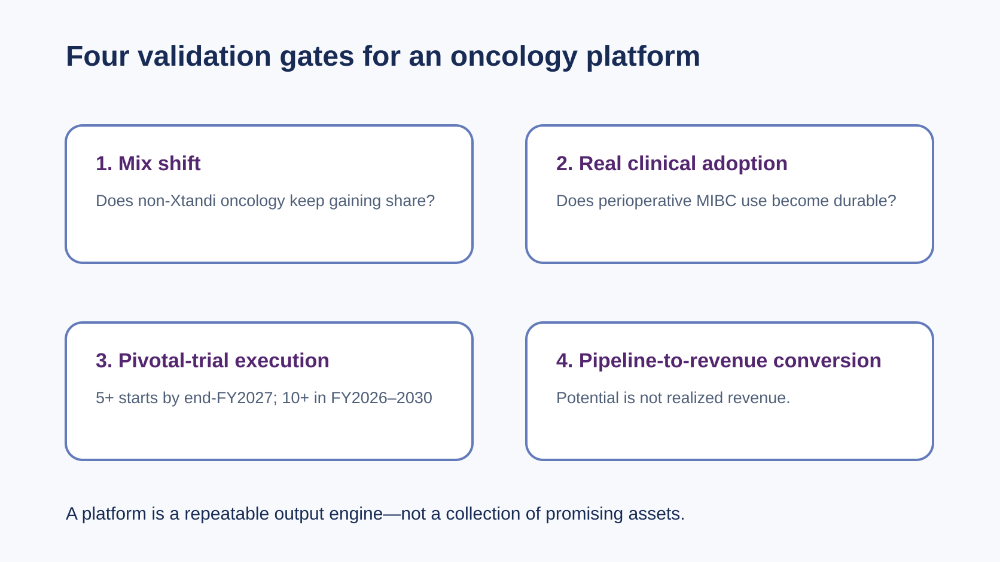

On July 10, 2026, the FDA expanded perioperative use of Padcev plus pembrolizumab in muscle-invasive bladder cancer (MIBC), regardless of cisplatin eligibility. For Astellas, this is more than another approval. It is fresh evidence in a larger test: can the company move from a single Xtandi-led franchise to a multi-product oncology platform?
Share this analysis
Send this article to readers who follow biotech, company strategy, and capital-market signals.

Using one reporting basis, Astellas recorded FY2025 global sales of JPY 960.8 billion for Xtandi, JPY 221.2 billion for Padcev, JPY 71.8 billion for Xospata, and JPY 63.1 billion for Vyloy. The latter three total JPY 356.1 billion, or 37.1% of Xtandi sales. That is not a formal oncology-segment revenue figure, but it shows the central fact: Astellas has a second layer of cash flow, yet remains far from escaping Xtandi concentration.
The comparison is useful precisely because it is deliberately simple. It does not assign gross profit, royalty economics, regional rights, or formal segment attribution. It is a concentration lens: how large are the named follow-on products beside the franchise that investors expect to face the sharpest LOE pressure? On that lens, the answer is encouraging but incomplete. A company can have several credible assets without having a self-renewing platform. The latter requires multiple products to expand at the same time, a pipeline that replenishes them, and commercial execution that survives beyond one exceptional launch.
Padcev is the clearest successor—though not a full economic capture
The expanded use is supported by EV-304/KEYNOTE-B15. Versus gemcitabine plus cisplatin, Padcev plus pembrolizumab produced an event-free survival hazard ratio of 0.53 and an overall-survival hazard ratio of 0.65, extending the regimen from advanced disease into the perioperative setting.

But Padcev is a partnered asset involving Astellas, Pfizer and Merck. Product momentum and the value ultimately retained by Astellas are not the same thing; investors should keep the two questions separate.
The clinical signal matters because a perioperative label potentially changes the duration and breadth of the commercial opportunity. Yet label expansion alone is not a demand curve. Uptake will depend on treatment-center practice, patient selection, sequencing, toxicity management, reimbursement, and the practical willingness of multidisciplinary teams to use the regimen around surgery. The hazard ratios describe comparative trial outcomes; they should not be converted into a cure rate or an automatic sales forecast. This is why the first validation gate is not simply “another approval,” but evidence that adoption is durable in the real treatment setting.
Vyloy and CLDN18.2 test a different kind of platform capability
Vyloy turns the CLDN18.2 biomarker into a first-line precision-treatment entry point in gastric cancer. FY2025 sales reached JPY 63.1 billion—fast-growing, but still small. Astellas has since licensed the CLDN18.2 ADC XNW27011/ASP546C for a USD 130 million upfront payment, up to USD 70 million in near-term payments, and up to USD 1.34 billion in milestones. It is an attempt to expand one marker across multiple modalities.

This is a strategy, not realized revenue. The license explicitly excludes mainland China, Hong Kong, Macau and Taiwan. Astellas's global CLDN18.2 position therefore cannot be treated as Taiwanese rights, nor does it justify forcing a Taiwan equity linkage without primary evidence.
The strategic attraction is understandable. A biomarker can support more than one drug format, and a company that learns how to identify patients, develop the companion evidence, manage toxicity, and commercialize one CLDN18.2 therapy may be better placed to develop the next. But a shared target is not automatically a shared commercial franchise. Different modalities can face different safety profiles, dosing burdens, competitive windows, and trial risks. In other words, CLDN18.2 gives Astellas an organizing thesis; the clinical pipeline still has to prove that the thesis can generate repeatable products.
The Taiwan coordinate and what Xospata proves
Xtandi's loss-of-exclusivity (LOE) has one verifiable Taiwan supply-chain coordinate: ScinoPharm (1789) lists enzalutamide among commercial APIs filed in the United States and manufactured in Taiwan. That makes it an observation point for generic-API and LOE supply dynamics—not proof that it supplies branded Astellas/Xtandi, Padcev, Vyloy, or Xospata.
Xospata generated JPY 71.8 billion in FY2025 sales, up 5.7% year over year. It will not close the Xtandi gap by itself, but it does show that Astellas can operate a global niche franchise in relapsed or refractory FLT3-mutated AML.
The ScinoPharm point deserves the same discipline. A publicly listed API on a corporate manufacturing list is a concrete, relevant observation for generic-entry monitoring. It is not evidence of a branded-drug sourcing contract. That distinction keeps the Taiwan angle useful without inventing a supply relationship. It also illustrates the broader LOE question: loss of exclusivity is not merely an IP date. It is a commercial transition that can rearrange pricing, generic supply, market share, and the benchmark by which successor products are judged.
Four gates between a portfolio and a platform
Under CSP2026, Astellas targets more than 10 Phase 3 or pivotal-trial starts during FY2026–FY2030, including more than five by the end of FY2027. It also describes roughly JPY 1 trillion of pipeline revenue potential in the mid-2030s. These are management targets and potential, not booked revenue.
The timing language is important. “By the end of FY2027” includes FY2027; it should not be shortened to “before FY2027,” which would bring the deadline forward by a fiscal year. Likewise, the ten-plus target belongs to the CSP2026 period as a whole. These commitments are useful monitoring anchors because they can be checked over time, but they do not establish that every trial will succeed or that projected pipeline revenue will materialize. A platform claim should become stronger only as those forward-looking milestones turn into clinical data, regulatory decisions, and commercial contribution.

My read: Astellas has completed the first transition—from one asset to a multi-product portfolio. It earns the word “platform” only if its next-generation pipeline can produce another Padcev- or Vyloy-scale franchise after Xtandi LOE.
That framing avoids two symmetrical errors. The first is to treat the company as unchanged because Xtandi is still dominant. That misses the real second layer already visible in Padcev, Vyloy, and Xospata. The second is to treat a collection of launches and licenses as a completed platform. That would confuse potential with demonstrated repeatability. The most informative evidence will arrive in sequence: product-mix change, real-world adoption, pivotal execution, and then the conversion of pipeline assets into revenue-bearing franchises. Until then, the appropriate conclusion is progress with an explicit burden of proof.
The watchlist is straightforward: the non-Xtandi oncology mix; real perioperative MIBC adoption of Padcev; pivotal-trial progress for CLDN18.2 assets such as ASP2138 and ASP546C; and delivery against CSP2026's five-plus and ten-plus trial-start milestones.
For readers, the practical discipline is to update the thesis only when one of those gates produces observable evidence, rather than extrapolating from a headline alone.
Related securities: Astellas (TSE: 4503), Pfizer (NYSE: PFE), and ScinoPharm (TWSE: 1789). ScinoPharm's role is limited to its disclosed enzalutamide API filing and Taiwan manufacturing, not an asserted originator-supply relationship.
Sources
- Astellas FY2025 financial results supplement
- FDA: Padcev plus pembrolizumab in MIBC
- Astellas CSP2026
- Astellas / Evopoint CLDN18.2 announcement
This article provides biotechnology and industry information only and does not constitute medical or investment advice.
Cite this article
For decks, research notes, or media references, cite Drugnews with the canonical article URL.
Drugnews Editorial Team. "After Xtandi: Can Astellas Build an Oncology Platform?." Drugnews, Jul 23, 2026. https://drugnews.com.tw/articles/2026-07-23-astellas-oncology-platform-en.html